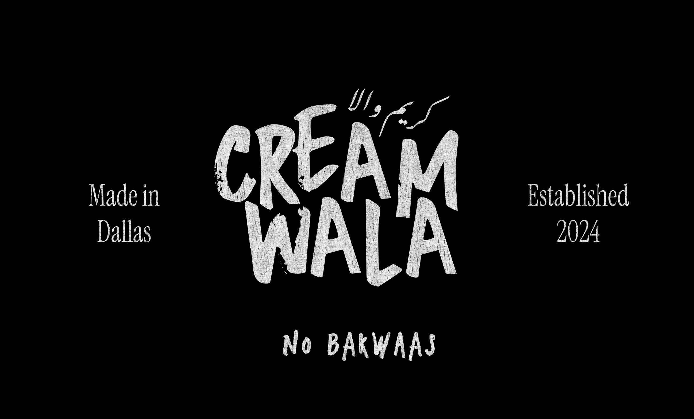
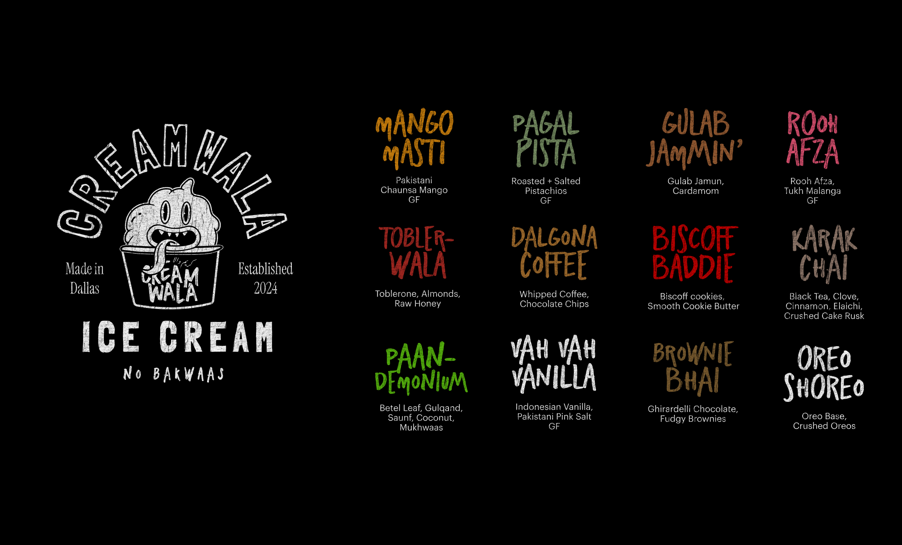
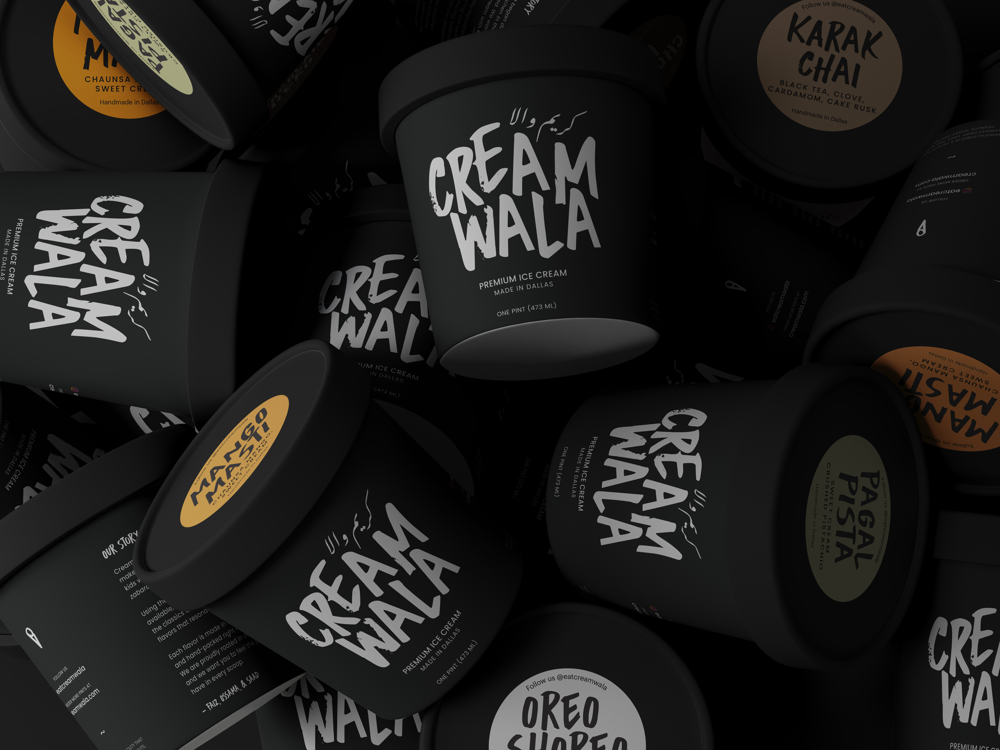
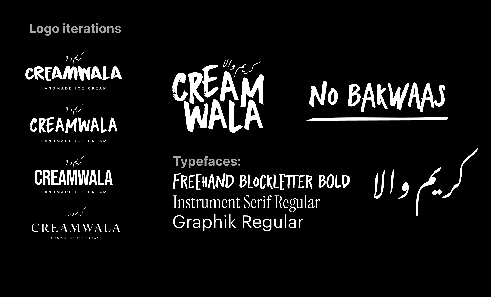
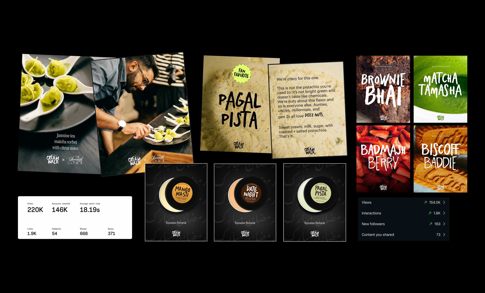
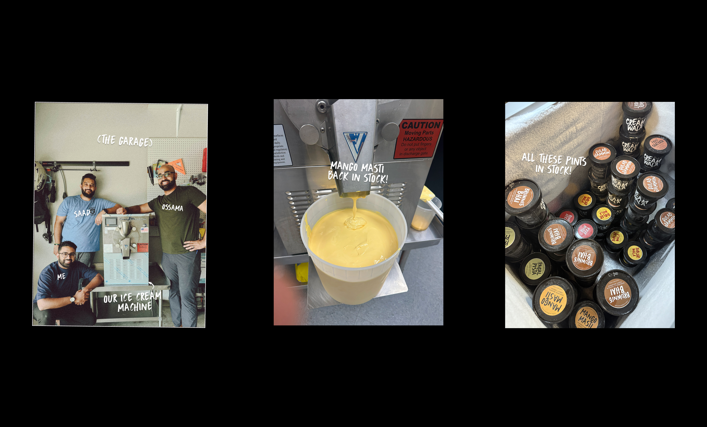
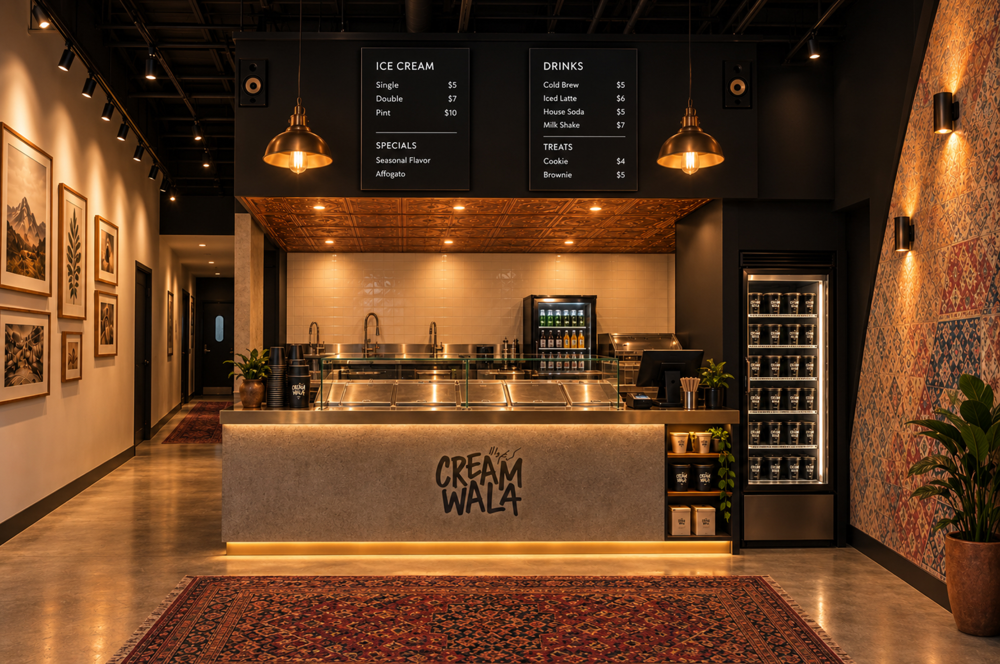
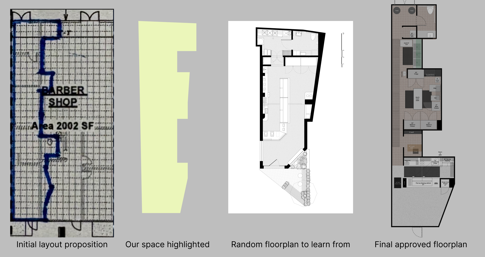
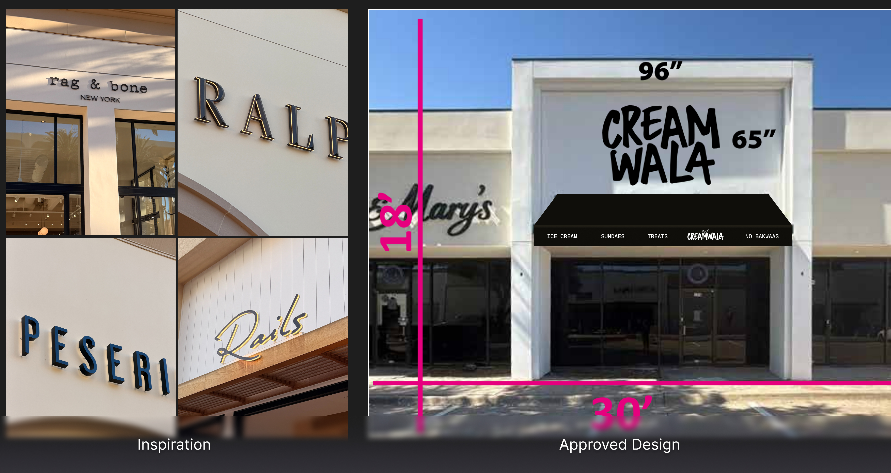
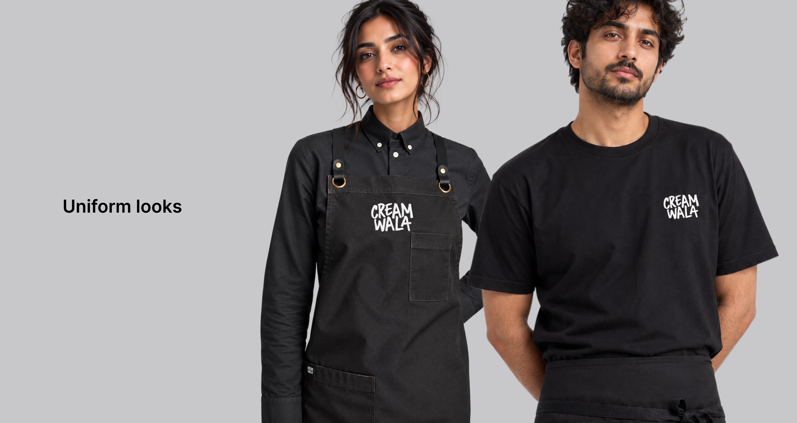

Creamwala
Building a Pakistani-American ice cream brand from the ground up.


Introduction
Creamwala is a Pakistani-American ice cream company redefining what cultural food brands can be. Our goal was to create a premium, small-batch ice cream that feels familiar yet completely new. Celebrating Pakistani flavors through a modern, design-driven lens and flawless execution. Every flavor tells a story that connects nostalgia with creativity amongst the Pakistani-American diaspora in the most authentic way possible.

Problem
Too often, Pakistani identity is diluted or misrepresented under broader South Asian or Bollywood-inspired tropes and visuals. I wanted Creamwala to be unapologetically Pakistani, drawing from the Pakistani-American diaspora's shared experiences, our music, humor, and language, and to present it with the same design sophistication and product quality as any high-end American brand.

Research
I analyzed direct competitors and broader cultural brands, studying how they told stories, priced products, and built communities. I took a bold but calculated risk by launching Creamwala without relying on market-tested messaging. Instead, I leaned into instinct, culture, and the community's pulse to see if authenticity and boldness would resonate.
It absolutely did.
Execution
Creamwala is a rejection of safe, expected ethnic branding. Instead of bold colors and floral motifs, I leaned into a rebellious, grunge-influenced design language that draws from underground zines, music posters, and late-night memories from when I visited Karachi.
From copywriting and art direction to packaging and merch, I led the creative vision to feel specific, intentional, and emotionally honest. Every flavor name and flavor description, from Pagal Pista, to Mango Masti, or Biscoff Baddie, was written with just enough mischief to make you smile if you get it. I didn't water it down nor did I provide long explanations. No "fusion" disclaimers. I just focused on clever storytelling that resonates with our people.


Retrospective
In our first 12 months, Creamwala grew from idea to a six-figure brand (what?) without VC, PR, or a storefront. Yet. Purely on Instagram and word-of-mouth.
We built a loyal audience across North Texas and beyond with our killer social media, amazing product, and uncompromising customer service. We started with selling out limited runs of our pints, and now expanding into wholesale partnerships with other local brands across DFW.
More than revenue, the most validating outcome is how often people say: "It finally feels like something made for us."
What's Next: The Flagship
Creamwala's first brick-and-mortar scoop shop opens in Richardson in November/December 2026, if there are no hiccups. It's about 830 square feet, split roughly half back-of-house and half front-of-house, with hours built around our late-night peak. Going from events and wholesale to a physical space meant learning a set of disciplines I'd never touched before.

MEPs and construction
Mechanical, electrical and plumbing drawings were completely new territory for me. Before anything could be drawn, we had to gather every piece of equipment we'd be using and check it against Richardson's city requirements for a new kitchen build: a 3-compartment sink, a mop sink, a prep sink, and a hand wash sink within 25 feet. When our MEP engineer/architect went unresponsive, I designed the layout entirely myself. That initial work really helped us, because we'd never worked with a commercial general contractor before, and our MEPs are what got construction started.

Signage and the logo update
The original logo paired CREAMWALA with its Urdu equivalent. The sign called for a back-lit halo treatment, but Nastaliq is a delicate script and couldn't be milled the same way as the larger English wordmark. Removing the Urdu alone threw the whole mark off balance. So I redesigned the logo into two versions: an English-only mark for the sign, and an updated English/Urdu lockup built to stay consistent with it.

Training
Most of our team will be part-time scoopers on their first or second job, with a shift lead layer above them. I watched hours of Chick-fil-A training videos and interviews with other food, beverage and hospitality groups, and drew from Unreasonable Hospitality, In-N-Out, Shake Shack and Preston Lee's thinking on staff buy-in. I used Claude to set the foundation for our training. The standards are specific: greet every guest within 5 seconds, arrive 5 minutes early, and check in at 30 and 90 days. The language in the trainings had to be clear, without our edgy, fun, hybrid English/Urdu brand voice.

CreamOS
I also experimented with building an in-house app called CreamOS. It connects our recipes, receipts, event requests and Square POS so we can forecast which flavors get produced.
We've received so much praise and admiration from the community for how we bootstrapped this business and executed it in a completely different way: no storefront, partnering with local coffee shops as pickup locations, and a design-first approach to events and menus. Now we want to change the game on hospitality for the store. We proved demand with our niche audience. Next, we need systems that translate across broader demographics while still staying true to our brand's soul.